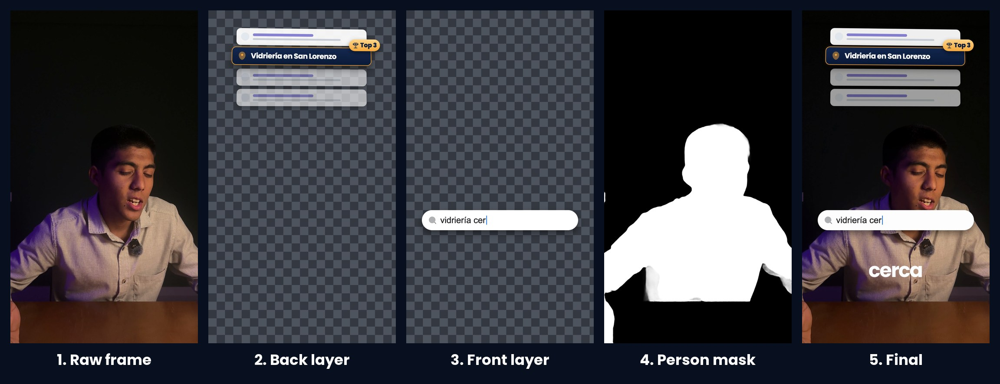
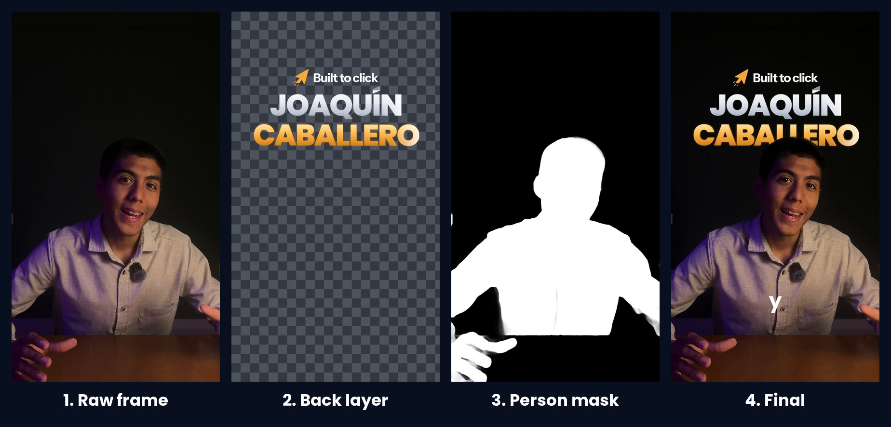
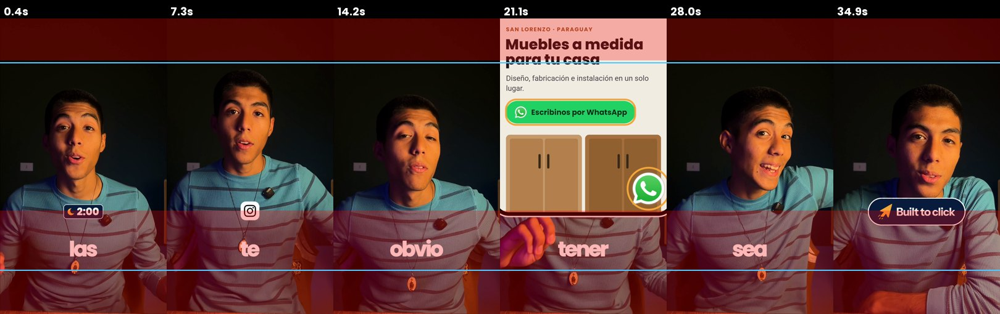

The VSL, 2:23
One take of 17:50 recorded in an evening. Code synced the lav mic, transcribed every word, picked one take per part and wrote the CapCut project; Joaquín cut it. The next morning every graphic was coded in React (Remotion), in four batches, each one reviewed by Joaquín, and placed back inside the same CapCut timeline. HD and native 4K masters were exported in code the same afternoon.
The name in 3D sits behind the speaker's head: each graphic is rendered as two layers, and a person mask from Apple Vision cuts the speaker out of the back one, frame by frame.
How the graphics were madeTwo layers and a person mask
The raw frame, the layer on the wall, the layer on the chest, the mask, the final frame.


Raw take vs finished
The first 9.9 seconds. On the left the phone file exactly as recorded, on the right the finished video, on the same frames, with the finished audio: the lav mic synced within a millisecond, captions one word at a time, the coded graphics.
Three Meta ads from one shoot
Hook, body and closing recorded as pieces and combined. Pre-edited by code, edited by Joaquín in CapCut, overlays designed in Claude Design and rendered with real transparency.
V6-01, 35 s
"Son las dos de la mañana": the late-night scene hook, then how people buy today.
V6-03, 36 s
A client got a lead from ChatGPT. The ChatGPT box types itself, the flags land on the words.
V6-04, 39 s
A case study: people who found a business on Google without knowing its name.
Every file is checked before anyone watches it
Our QA script on one of the ads: the frame before and after every cut, and the Reels-ad dead zones in red with the 4:5 crop in blue. It also measures loudness and true peak, silences inside the speech and clicks at the cuts.
